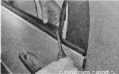
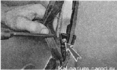
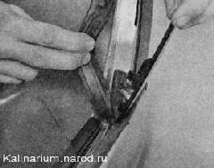
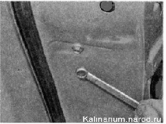
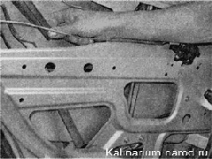
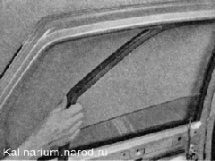
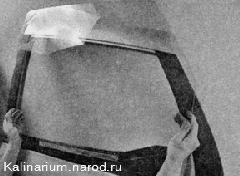

Стекло задней двери - снятие и установкаСнятие 1. Подготавливаем автомобиль к выполнению работы. 2. Ручкой стеклоподъемника опускаем стекло двери. 3. Снимаем обивку двери. 4. Поддев отверткой, снимаем внутреннее уплотнение стекла. 
5. Вынув уплотнитель из рамки двери, крестовой отверткой отворачиваем саморез крепления облицовки стекла.- 
6. Поддев отверткой верхний край облицовки, снимаем облицовку. 
7. Ключом на 8 мм отворачиваем болт крепления направляющей стекла.  8. Извлекаем нижний конец уплотнителя из направляющей и вынимаем направляющую из двери.  9. Поддев отверткой, выдвигаем фиксатор наружного уплотнителя стекла 10. Снимаем уплотнитель рамки двери.  11. Отсоединяем стекло от стеклоподъемника (см. «Стеклоподъемник — снятие и установка»). 12. Извлекаем стекло из двери. Установка Устанавливаем стекло в обратной последовательности. |